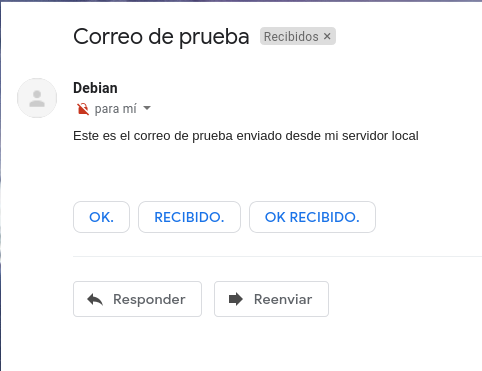

<!DOCTYPE html>
<html lang="es">

<head>
            <meta charset="utf-8">
        <meta http-equiv="X-UA-Compatible" content="IE=edge">
        <meta name="viewport" content="width=device-width, initial-scale=1">


        <title>Servidor de correos | Javier Pérez Hidalgo</title>

        <!-- Bootstrap Core CSS -->
        <link href="/theme/css/bootstrap.min.css" rel="stylesheet">

        <!-- Custom CSS -->
        <link href="/theme/css/clean-blog.min.css" rel="stylesheet">

        <!-- Code highlight color scheme -->
            <link href="/theme/css/code_blocks/darkly.css" rel="stylesheet">


        <!-- Custom Fonts -->
        <link href="https://maxcdn.bootstrapcdn.com/font-awesome/4.7.0/css/font-awesome.min.css" rel="stylesheet" type="text/css">
        <link href='https://fonts.googleapis.com/css?family=Lora:400,700,400italic,700italic' rel='stylesheet' type='text/css'>
        <link href='https://fonts.googleapis.com/css?family=Open+Sans:300italic,400italic,600italic,700italic,800italic,400,300,600,700,800' rel='stylesheet' type='text/css'>

        <!-- HTML5 Shim and Respond.js IE8 support of HTML5 elements and media queries -->
        <!-- WARNING: Respond.js doesn't work if you view the page via file:// -->
        <!--[if lt IE 9]>
            <script src="https://oss.maxcdn.com/libs/html5shiv/3.7.0/html5shiv.js"></script>
            <script src="https://oss.maxcdn.com/libs/respond.js/1.4.2/respond.min.js"></script>
        <![endif]-->


        <meta name="description" content="En este post vamos a instalar y configurar de manera adecuada un servidor de correos en una VPS alojada en OVH. Mi dominio es...">

        <meta name="author" content="Javier Pérez Hidalgo">

        <meta name="tags" content="Correos">
        <meta name="tags" content="postfix">
        <meta name="tags" content="dovecot">
        <meta name="tags" content="imap">
        <meta name="tags" content="imaps">
        <meta name="tags" content="SMTPS">

	                <meta property="og:locale" content="">
		<meta property="og:site_name" content="Javier Pérez Hidalgo">

	<meta property="og:type" content="article">
            <meta property="article:author" content="/author/javier-perez-hidalgo.html">
	<meta property="og:url" content="/servidor-de-correos.html">
	<meta property="og:title" content="Servidor de correos">
	<meta property="article:published_time" content="2018-02-21 00:00:00+01:00">
            <meta property="og:description" content="En este post vamos a instalar y configurar de manera adecuada un servidor de correos en una VPS alojada en OVH. Mi dominio es...">

            <meta property="og:image" content="theme/images/banner-servicios.jpg">
</head>

<body class="article-servidor-de-correos">

    <!-- Navigation -->
    <nav class="navbar navbar-default navbar-custom navbar-fixed-top">
        <div class="container-fluid">
            <!-- Brand and toggle get grouped for better mobile display -->
        <!--    <div class="navbar-header page-scroll">
                <button type="button" class="navbar-toggle" data-toggle="collapse" data-target="#bs-example-navbar-collapse-1">
                    <span class="sr-only">Toggle navigation</span>
                    <span class="icon-bar"></span>
                    <span class="icon-bar"></span>
                    <span class="icon-bar"></span>
                </button>-->
                <a class="navbar-brand" href="/">Inicio</a>
                <a class="navbar-brand" href="/categories">Categorías</a>
                <a class="navbar-brand" href="/authors">Sobre mí</a>

            </div>

            <!-- Collect the nav links, forms, and other content for toggling -->
            <div class="collapse navbar-collapse" id="bs-example-navbar-collapse-1">
                <ul class="nav navbar-nav navbar-right">

                </ul>
            </div>
            <!-- /.navbar-collapse -->
        </div>
        <!-- /.container -->
    </nav>

    <!-- Page Header -->
        <header class="intro-header" style="background-image: url('/theme/images/banner-servicios.jpg')">
        <div class="container">
            <div class="row">
                <div class="col-lg-8 col-lg-offset-2 col-md-10 col-md-offset-1">
                    <div class="post-heading">
                        <h1>Servidor de correos</h1>
                        <span class="meta">Publicado por
                                <a href="/author/javier-perez-hidalgo.html">Javier Pérez Hidalgo</a>
                             el mié 21 febrero 2018
                        </span>
                        
                    </div>
                </div>
            </div>
        </div>
    </header>

    <!-- Main Content -->
    <div class="container">
        <div class="row">
            <div class="col-lg-8 col-lg-offset-2 col-md-10 col-md-offset-1">
    <!-- Post Content -->
    <article>
        <p>En este <em>post</em> vamos a instalar y configurar de manera adecuada un servidor de correos en una <strong>VPS</strong> alojada en <strong>OVH</strong>. Mi dominio es <code>iesgn15.es</code>. El nombre del servidor de correo será <code>mail.iesgn15.es</code> (este es el nombre que deberá aparecer en el registro MX).</p>
<h4>Instalación</h4>
<p>Para comenzar el artículo vamos a instalar las utilidades principales que necesitamos para crear nuestro servidor de correos. Empezaremos por instalar los paquetes <code>postfix</code> y <code>bsd-mailx</code> que corresponden al servidor y a las utilidades del cliente respectivamente.</p>
<pre>
apt install postfix bsd-mailx -y
</pre>

<p>Comencemos.</p>
<h4>Gestión de correos desde el servidor</h4>
<p><strong>1. Vamos a enviar un correo desde nuestro servidor local al exterior (Gmail).</strong></p>
<p>Antes de realizar este ejercicio, vamos a crear un registro de tipo <strong>SPF</strong> en nuestro DNS de OVH, esto le servirá a <strong>Gmail</strong> para identificar que nuestro correo no es <strong>Spam</strong>. He creado el siguiente registro:</p>
<p></p>
<p>Ahora vamos a probar a enviar un correo electrónico desde nuestro servidor local, para ello haremos uso de la herramienta <code>mail</code>:</p>
<pre>
debian@vpsjavierpzh:~$ mail javierperezhidalgo01@gmail.com
Subject: Correo de prueba       
Este es el correo de prueba enviado desde mi servidor local
Cc:
</pre>

<p>Parece que ya hemos enviado el correo, pero para asegurarnos vamos a visualizar los <em>logs</em> de nuestro servidor, que se encuentran en el fichero <code>/var/log/mail.log</code>:</p>
<pre>
...
Jan 21 10:24:22 vpsjavierpzh postfix/pickup[24623]: A492F101017: uid=1000 from=<\debian\>
Jan 21 10:24:22 vpsjavierpzh postfix/cleanup[25286]: A492F101017: message-id=<\20210121092422.A492F101017@vpsjavierpzh.iesgn15.es\>
Jan 21 10:24:22 vpsjavierpzh postfix/qmgr[9341]: A492F101017: from=<\debian@iesgn15.es\>, size=488, nrcpt=1 (queue active)
Jan 21 10:24:30 vpsjavierpzh postfix/smtp[25289]: A492F101017: to=<\javierperezhidalgo01@gmail.com\>, relay=gmail-smtp-in.l.google.com[173.194.76.26]:25, delay=7.8, delays=0.05/0.01/0.26/7.5, dsn=2.0.0, status=sent (250 2.0.0 OK  1611221070 h17si4006834wmq.57 - gsmtp)
Jan 21 10:24:30 vpsjavierpzh postfix/qmgr[9341]: A492F101017: removed
...
</pre>

<p>Podemos observar que nos muestra una serie de mensajes de los que podemos sacar que hemos enviado un correo desde <code>debian@iesgn15.es</code> hacia <code>javierperezhidalgo01@gmail.com</code> y que el estado es <em>sent</em>, por lo que en teoría el correo debería haber llegado correctamente. Si nos dirigimos a la bandeja de entrada del correo <code>javierperezhidalgo01@gmail.com</code>:</p>
<p></p>
<p></p>
<p>Vemos que efectivamente hemos recibido el correo procedente de <code>debian@iesgn15.es</code>.</p>
<p>Antes de terminar, vamos a analizar más a fondo el código del correo, para ello hacemos <em>click</em> en <em>Mostrar original</em>:</p>
<pre>
...
Received-SPF: pass (google.com: domain of debian@iesgn15.es designates 51.210.105.17 as permitted sender) client-ip=51.210.105.17;
...
</pre>

<p>En estas líneas se aprecia como ha pasado correctamente y ha hecho uso del registro <strong>SPF</strong> y por tanto no nos muestra este mensaje como <em>Spam</em>.</p>
<p><strong>2. Vamos a enviar un correo desde el exterior (Gmail) a nuestro servidor local.</strong></p>
<p>Al igual que en la tarea anterior, antes de realizar este ejercicio, vamos a crear un registro de tipo <strong>MX</strong> en nuestro DNS de OVH. He creado el siguiente registro que apunta a su vez a un registro tipo <em>A</em>:</p>
<p></p>
<p>Hecho esto, vamos a enviar un correo desde <strong>Gmail</strong> hacia <code>debian@iesgn15.es</code>:</p>
<p></p>
<p>Una vez enviado, vamos a comprobar que lo hayamos recibido en nuestro servidor local, para ello vamos a visualizar de nuevo los <em>logs</em> del fichero <code>/var/log/mail.log</code>:</p>
<pre>
Jan 21 10:45:32 vpsjavierpzh postfix/smtpd[25717]: connect from mail-io1-f43.google.com[209.85.166.43]
Jan 21 10:45:33 vpsjavierpzh postfix/smtpd[25717]: 35244101016: client=mail-io1-f43.google.com[209.85.166.43]
Jan 21 10:45:33 vpsjavierpzh postfix/cleanup[25726]: 35244101016: message-id=<CAMu5ax_BkYemDjV=A1yf1wrDBZ6w_tHZ0Ws+tnPX+3k2TF5ghw@mail.gmail.com>
Jan 21 10:45:33 vpsjavierpzh postfix/qmgr[9341]: 35244101016: from=<javierperezhidalgo01@gmail.com>, size=2643, nrcpt=1 (queue active)
Jan 21 10:45:33 vpsjavierpzh postfix/local[25727]: 35244101016: to=<debian@iesgn15.es>, relay=local, delay=0.02, delays=0.01/0.01/0/0, dsn=2.0.0, status=sent (delivered to mailbox)
Jan 21 10:45:33 vpsjavierpzh postfix/qmgr[9341]: 35244101016: removed
Jan 21 10:45:33 vpsjavierpzh postfix/smtpd[25717]: disconnect from mail-io1-f43.google.com[209.85.166.43] ehlo=2 starttls=1 mail=1 rcpt=1 bdat=1 quit=1 commands=7
You have mail in /var/mail/debian
</pre>

<p>Vaya, parece que tenemos un nuevo correo procedente de la dirección <code>javierperezhidalgo01@gmail.com</code> y lo ha almacenado en la ruta <code>/var/mail/debian</code>, así que vamos a verificarlo.</p>
<p>Para leer los nuevos correos, haremos uso de la herramienta <code>mail</code>.</p>
<pre>
debian@vpsjavierpzh:~$ mail
Mail version 8.1.2 01/15/2001.  Type ? for help.
"/var/mail/debian": 1 message 1 new
\>N  1 javierperezhidalg  Thu Jan 21 10:45   54/2768  Correo de prueba
& 1
</pre>

<p>Vemos que nos indica que tenemos un correo sin leer, si indicamos su número y lo leemos:</p>
<pre>
Message 1:
From javierperezhidalgo01@gmail.com  Thu Jan 21 10:45:33 2021
X-Original-To: debian@iesgn15.es

...

Subject: Correo de prueba
To: debian@iesgn15.es
Content-Type:

...

Este es el correo de prueba enviado desde Gmail

...
</pre>

<p>Efectivamente hemos recibido el correo.</p>
<p>Una vez leído, salimos del programa y vemos que guarda el correo en la dirección <code>/home/debian/mbox</code>:</p>
<pre>
& q
Saved 1 message in /home/debian/mbox
</pre>

<p>Explicado esto, vamos a pasar con el siguiente ejercicio.</p>
<h4>Uso de alias y redirecciones</h4>
<p><strong>3. Uso de alias y redirecciones.</strong></p>
<p>Vamos a comprobar como los procesos del servidor pueden mandar correos para informar sobre su estado. Por ejemplo cada vez que se ejecuta una tarea <code>cron</code> podemos enviar un correo informando del resultado. Normalmente estos correos se mandan al usuario <strong>root</strong> del servidor, para ello:</p>
<pre>
crontab -e
</pre>

<p>E indico donde se envía el correo:</p>
<pre>
MAILTO = root
</pre>

<p>Voy a añadir una nueva tarea en el <em>cron</em> para ver como se manda el correo cuando se lleve dicha tarea. Añado la siguiente línea a mi <em>crontab</em>:</p>
<pre>
40 18 * * * apt update && apt upgrade -y
</pre>

<p>Esta tarea lo que hará básicamente es una actualización de todos los paquetes que haya instalados en el sistema, y se llevará a cabo todos los días a las 18:40.</p>
<p>Al cerrar y guardar nuestro <em>crontab</em> apreciaremos la siguiente salida que indica que hemos realizado cambios en él:</p>
<pre>
root@vpsjavierpzh:~# crontab -e
crontab: installing new crontab
</pre>

<p>Aún queda algo de tiempo hasta las 18:40, lo que me da margen para configurar una serie de <strong>alias</strong> y <strong>redirecciones</strong> para hacer llegar esos correos a nuestro correo personal.</p>
<p>En primer lugar vamos a configurar un nuevo <strong>alias</strong>, para que los correos que tengan como destinatario al usuario <strong>root</strong>, también lleguen al buzón del usuario <strong>debian</strong>. Para ello vamos a editar el fichero <code>/etc/aliases</code> y añadiremos la siguiente línea:</p>
<pre>
root: debian
</pre>

<p>De manera que el contenido total del fichero <code>/etc/aliases</code> sería:</p>
<pre>
# See man 5 aliases for format
postmaster:    root
root: debian
</pre>

<p>Cuando se modifica este fichero, debemos ejecutar el siguiente comando para aplicar los cambios:</p>
<pre>
newaliases
</pre>

<p>Hecho esto, vamos a enviar un correo desde <strong>Gmail</strong> hacia <code>root@iesgn15.es</code>:</p>
<p></p>
<p>Una vez enviado, vamos a comprobar que lo hayamos recibido en nuestro servidor local, en el usuario <strong>debian</strong>. Para leer los nuevos correos, haremos uso de la herramienta <code>mail</code> en el usuario <em>debian</em>.</p>
<pre>
debian@vpsjavierpzh:~$ mail
Mail version 8.1.2 01/15/2001.  Type ? for help.
"/var/mail/debian": 2 messages 2 new
...
\>N  2 javierperezhidalg  Tue Feb  2 13:53   54/2752  =?UTF-8?Q?prueba_de_reenv=C3=ADo?=
 & 2
</pre>

<p>Vemos que nos indica que tenemos dos correos sin leer (el primero es una prueba), si indicamos su número, en este caso el 2, y lo leemos:</p>
<pre>
Message 2:
From javierperezhidalgo01@gmail.com  Tue Feb  2 13:53:29 2021
X-Original-To: root@iesgn15.es

...

Subject: =?UTF-8?Q?prueba_de_reenv=C3=ADo?=
To: root@iesgn15.es
Content-Type:

...

hola, llega al usuario debian?

...
</pre>

<p>Efectivamente hemos recibido el correo en el usuario <em>debian</em> y podemos apreciar que el destinatario del correo es <strong>root</strong>, por tanto el alias está bien configurado.</p>
<p>Pasamos a realizar una redirección. Las redirecciones se utilizan para enviar los correos que lleguen a un usuario, a una cuenta de correo externa. Para usuarios reales, las redirecciones se definen en el fichero <code>~/.forward</code> y el formato de este fichero es simplemente un listado de cuentas de correo a las que se quiere redirigir el correo.</p>
<p>En mi caso, creo dicho fichero en el usuario <strong>debian</strong> e introduzco una dirección de correo externa distinta de la que va a enviar el correo:</p>
<pre>
reyole111@gmail.com
</pre>

<p>Hecho esto, vamos a enviar un correo desde <strong>Gmail</strong> hacia <code>root@iesgn15.es</code>:</p>
<p></p>
<p>Supuestamente, lo que ahora debería ocurrir es lo siguiente. El correo cuyo destinatario es <strong>root</strong>, debe llegar a <strong>debian</strong>, lo cuál es señal de que el alias está actuando correctamente, y automáticamente después, el correo debe ser reenviado a la dirección <strong>reyole111@gmail.com</strong>.</p>
<p>Vamos a ver si hemos recibido el correo en la bandeja de entrada de <strong>reyole111@gmail.com</strong>.</p>
<p></p>
<p></p>
<p>Efectivamente, también hemos recibido el correo en la dirección <em>reyole111@gmail.com</em>, por tanto la redirección está bien configurada.</p>
<p>¿Recordáis que teníamos programada una tarea en el <em>cron</em> para las 18:40? Bien, pues resulta que acabo de recibir en <code>reyole111@gmail.com</code> el siguiente correo:</p>
<p></p>
<p>Se puede apreciar la salida de los comandos que indiqué en la tarea del <em>cron</em>, por lo que, además de ver como nuestro <em>cron</em> nos ha notificado por correo, podemos ver que una vez más han actuado tanto el alias como la redirección configurada.</p>
<h4>Para luchar contra el SPAM</h4>
<p><strong>4. Vamos a configurar <code>Postfix</code> para que tenga en cuenta el registro <em>SPF</em> de los correos que recibe.</strong></p>
<p>En primer lugar, necesitaremos instalar el paquete <code>postfix-policyd-spf-python</code>:</p>
<pre>
apt install postfix-policyd-spf-python -y
</pre>

<p>Una vez instalado, en el fichero <code>/etc/postfix/master.cf</code> debemos crear un <em>socket UNIX</em> que será el encargado de realizar la comprobación. Para ello introduciremos la siguiente línea:</p>
<pre>
policyd-spf  unix  -       n       n       -       0       spawn     user=policyd-spf argv=/usr/bin/policyd-spf
</pre>

<p>Para terminar, debemos editar el fichero <code>/etc/postfix/main.cf</code> y en él, indicaremos que haga uso de dicho <em>socket UNIX</em>. Añadimos esta línea:</p>
<pre>
policyd-spf_time_limit = 3600
smtpd_recipient_restrictions = check_policy_service unix:private/policyd-spf
</pre>

<p>Hecho esto, aplicaremos los cambios reiniciando el servicio:</p>
<pre>
systemctl restart postfix
</pre>

<p>Vamos a hacer la prueba visualizando los <em>logs</em> y enviando un nuevo correo desde <em>Gmail</em>:</p>
<pre>
root@vpsjavierpzh:~# tail -f /var/log/mail.log
Feb 19 19:14:21 vpsjavierpzh postfix/smtpd[19227]: connect from mail-io1-f42.google.com[209.85.166.42]
Feb 19 19:14:22 vpsjavierpzh policyd-spf[19234]: prepend Received-SPF: Pass (mailfrom) identity=mailfrom; client-ip=209.85.166.42; helo=mail-io1-f42.google.com; envelope-from=javierperezhidalgo01@gmail.com; receiver=<UNKNOWN>
Feb 19 19:14:22 vpsjavierpzh postfix/smtpd[19227]: 7ED0310115E: client=mail-io1-f42.google.com[209.85.166.42]
Feb 19 19:14:22 vpsjavierpzh postfix/cleanup[19237]: 7ED0310115E: message-id=<CAMu5ax89DXzEtwWTeLm-OmDK18zXgXDocqiuk0XLn+9OnAu3cA@mail.gmail.com>
Feb 19 19:14:22 vpsjavierpzh postfix/qmgr[19197]: 7ED0310115E: from=<javierperezhidalgo01@gmail.com>, size=2710, nrcpt=1 (queue active)
Feb 19 19:14:22 vpsjavierpzh postfix/cleanup[19237]: 81C7710115F: message-id=<CAMu5ax89DXzEtwWTeLm-OmDK18zXgXDocqiuk0XLn+9OnAu3cA@mail.gmail.com>
Feb 19 19:14:22 vpsjavierpzh postfix/qmgr[19197]: 81C7710115F: from=<javierperezhidalgo01@gmail.com>, size=2845, nrcpt=1 (queue active)
Feb 19 19:14:22 vpsjavierpzh postfix/local[19238]: 7ED0310115E: to=<root@iesgn15.es>, relay=local, delay=0.36, delays=0.35/0.01/0/0, dsn=2.0.0, status=sent (forwarded as 81C7710115F)
Feb 19 19:14:22 vpsjavierpzh postfix/qmgr[19197]: 7ED0310115E: removed
Feb 19 19:14:22 vpsjavierpzh postfix/smtpd[19227]: disconnect from mail-io1-f42.google.com[209.85.166.42] ehlo=2 starttls=1 mail=1 rcpt=1 bdat=1 quit=1 commands=7
</pre>

<p>Podemos ver como ahora si está llevando a cabo la comprobación del registro <em>SPF</em>.</p>
<p><strong>5. Vamos a configurar un sistema <em>antispam</em>.</strong></p>
<p>En este apartado vamos a ver como instalar un sistema <em>antispam</em> en nuestro servidor de correos. Para ello necesitaremos instalar los siguientes paquetes:</p>
<pre>
apt install spamc spamassassin -y
</pre>

<p>Una vez instalados, habilitaremos e iniciaremos el servicio:</p>
<pre>
systemctl enable spamassassin && systemctl start spamassassin
</pre>

<p>Posteriormente, nos dirigiremos al fichero <code>/etc/postfix/master.cf</code> y veremos que nos encontramos con las siguientes líneas:</p>
<pre>
smtp      inet  n       -       y       -       -       smtpd
...
#submission inet n       -       y       -       -       smtpd
</pre>

<p>Una vez localizadas, tendremos que hacer unas modificaciones en ellas para que <em>Postfix</em> tenga en cuenta el sistema <em>antispam</em>, además de añadir una nueva directiva. Realizadas las modificaciones, las líneas tendrían el siguiente aspecto:</p>
<pre>
smtp      inet  n       -       y       -       -       smtpd -o content_filter=spamassassin
...
submission inet n       -       y       -       -       smtpd -o content_filter=spamassassin
...
spamassassin unix -     n       n       -       -       pipe user=debian-spamd argv=/usr/bin/spamc -f -e /usr/sbin/sendmail -oi -f ${sender} ${recipient}
</pre>

<p>Por último, tendremos que configurar <strong>Spamassassin</strong>. Su configuración es bastante simple y se llevará a cabo en el fichero <code>/etc/spamassassin/local.cf</code>. En él necesitaremos descomentar la siguiente línea, ya que por defecto aparece comentada:</p>
<pre>
rewrite_header Subject *****SPAM*****
</pre>

<p>Realizados todas las modificaciones, aplicaremos los cambios reiniciando ambos servicios:</p>
<pre>
systemctl restart postfix
systemctl restart spamassassin
</pre>

<p>Llegó el momento de realizar la prueba, enviaremos un correo desde <em>Gmail</em>, y en el mensaje del correo, introduciré un mensaje de <em>spam</em>, que puedes encontrar <a href="images/sri_servidor_de_correos/correospam.txt">aquí</a>.</p>
<p>Vamos a hacer la prueba visualizando los <em>logs</em>:</p>
<pre>
Feb 19 19:43:56 vpsjavierpzh spamd[24888]: spamd: identified spam (999.9/5.0) for debian-spamd:112 in 0.2 seconds, 3818 bytes.
Feb 19 19:43:56 vpsjavierpzh spamd[24888]: spamd: result: Y 999 - DKIM_SIGNED,DKIM_VALID,DKIM_VALID_AU,FREEMAIL_FROM,GTUBE,HTML_MESSAGE,RCVD_IN_MSPIKE_H2,SPF_PASS,URIBL_BLOCKED scantime=0.2,size=3818,user=debian-spamd,uid=112,required_score=5.0,rhost=::1,raddr=::1,rport=38494,mid=<CA+kZvsg23JEMj32M6Frs1bc1UZ_2kSNeEpGKzP+wQ5wcdkQN-A@mail.gmail.com>,autolearn=no autolearn_force=no
Feb 19 19:43:56 vpsjavierpzh postfix/pipe[25543]: B6A05826C7: to=<debian@iesgn15.es>, relay=spamassassin, delay=0.61, delays=0.32/0.01/0/0.29, dsn=2.0.0, status=sent (delivered via spamassassin service)
</pre>

<p>Vemos como nos muestra un mensaje <strong>identified spam</strong>.</p>
<p><strong>6. Vamos a configurar un sistema antivirus.</strong></p>
<p>En este apartado vamos a ver como instalar un sistema antivirus en nuestro servidor de correos. En mi caso, voy a utilizar un antivirus llamado <strong>clamAV</strong>, que se instala mediante los siguientes paquetes:</p>
<pre>
apt install clamsmtp clamav-daemon arc arj bzip2 cabextract lzop nomarch p7zip pax tnef unrar-free unzip -y
</pre>

<p>Una vez instalados, habilitaremos e iniciaremos el servicio:</p>
<pre>
systemctl enable clamav-daemon && systemctl start clamav-daemon
</pre>

<p>Posteriormente, nos dirigiremos al fichero <code>/etc/postfix/main.cf</code> y añadiremos las siguientes líneas:</p>
<pre>
content_filter = scan:127.0.0.1:10025
receive_override_options = no_address_mappings
</pre>

<p>También tendremos que editar el fichero <code>/etc/postfix/master.cf</code> y añadir las líneas siguientes. Estas líneas nos servirán para indicarle a nuestro servidor de correos, donde debe llevar a cabo las consultas referentes sobre si los diferentes correos llevan algún virus o no.</p>
<pre>
scan      unix  -       -       n       -       16      smtp
        -o smtp_send_xforward_command=yes

127.0.0.1:10026      inet  n       -       n       -       16      smtpd
        -o content_filter=
        -o receive_override_options=no_unknown_recipient_checks,no_header_body_checks
        -o smtpd_helo_restrictions=
        -o smtpd_client_restrictions=
        -o smtpd_sender_restrictions=
        -o smtpd_recipient_restrictions=permit_mynetworks,reject
        -o mynetworks_style=host
        -o smtpd_authorized_xforward_hosts=127.0.0.0/8
</pre>

<p>Realizados todas las modificaciones, aplicaremos los cambios reiniciando el servicio:</p>
<pre>
systemctl restart postfix
</pre>

<p>Vamos a hacer la prueba visualizando los <em>logs</em>:</p>
<pre>
Feb 19 19:43:56 vpsjavierpzh spamd[24888]: spamd: clean message (-0.1/5.0) for debian-spamd:112 in 0.2 seconds, 2794 bytes.
Feb 19 19:43:56 vpsjavierpzha spamd[24888]: spamd: result: . 0 - DKIM_SIGNED,DKIM_VALID,DKIM_VALID_AU,FREEMAIL_FROM,HTML_MESSAGE,RCVD_IN_MSPIKE_H2,SPF_PASS,TVD_SPACE_RATIO scantime=0.2,size=2794,user=debian-spamd,uid=112,required_score=5.0,rhost=::1,raddr=::1,rport=38584,mid=<CA+kZvsjbkMPbcUYhSfzzbGYCtVTZ07bVNT1+YvB=Ce2Ln9J_fQ@mail.gmail.com>,autolearn=ham autolearn_force=no
Feb 19 19:43:56 vpsjavierpzh postfix/pipe[17795]: 9C5A0826CE: to=<debian@iesgn15.es>, relay=spamassassin, delay=0.51, delays=0.27/0.01/0/0.23, dsn=2.0.0, status=sent (delivered via spamassassin service)
Feb 19 19:43:56 vpsjavierpzh postfix/qmgr[17773]: 9C5A0826CE: removed
...
Feb 19 20:32:15 vpsjavierpzh clamsmtpd: 100002: accepted connection from: 127.0.0.1
Feb 19 19:32:15 vpsjavierpzh spamd[24887]: prefork: child states: II
Feb 19 19:32:15 vpsjavierpzh postfix/smtpd[17803]: connect from localhost[127.0.0.1]
Feb 19 19:32:15 vpsjavierpzh postfix/smtpd[17803]: ECB66826CE: client=localhost[127.0.0.1]
Feb 19 19:32:15 vpsjavierpzh postfix/smtp[17801]: D79E0826D0: to=<debian@iesgn15.es>, relay=127.0.0.1[127.0.0.1]:10025, delay=0.09, delays=0.01/0.02/0.07/0.01, dsn=2.0.0, status=sent (250 Virus Detected; Discarded Email)
Feb 19 19:32:15 vpsjavierpzh postfix/qmgr[17773]: D79E0826D0: removed
</pre>

<p>Vemos como nos muestra un mensaje <strong>250 Virus Detected</strong>.</p>
<h4>Gestión de correos desde un cliente</h4>
<p><strong>7. Vamos a configurar el buzón de los usuarios de tipo <code>Maildir</code>. Envía un correo a tu usuario y comprueba que el correo se ha guardado en el buzón <code>Maildir</code> del usuario del sistema correspondiente. Recuerda que ese tipo de buzón no se puede leer con la utilidad <code>mail</code>.</strong></p>
<p>Como ya sabemos, por defecto al instalar <em>Postfix</em>, estaremos utilizando el formato <strong>mbox</strong> para almacenar los correos electrónicos, pero, ¿cómo hacemos para cambiar al formato <strong>Maildir</strong>?</p>
<p>Primeramente vamos a ver que diferencias encontramos entre los dos.</p>
<ul>
<li>
<p><strong>mbox:</strong> guarda todos los mensajes en un solo archivo.</p>
</li>
<li>
<p><strong>Maildir:</strong> utiliza un directorio, con subdirectorios, para guardar los mensajes en ficheros individuales.</p>
</li>
</ul>
<p>Explicado esto, vamos a proceder a configurar <em>Postfix</em> para que empiece a utilizar el formato <em>Maildir</em>.</p>
<p>En primer lugar, nos dirigimos al fichero <code>/etc/postfix/main.cf</code> e introduciremos la siguiente línea en él:</p>
<pre>
home_mailbox = Maildir/
</pre>

<p>(Es importante la <code>/</code> final.)</p>
<p>Hecho esto, ya habremos configurado <em>Postfix</em> para que utilice <em>Maildir</em>, por tanto vamos a reiniciar el servicio y a hacer una prueba para comprobar el cambio.</p>
<pre>
systemctl restart postfix
</pre>

<p>Desde este momento, no podremos ver los correos con la herramienta <code>mail</code>. Para solucionarlo, instalaremos un nuevo cliente llamado <code>mutt</code>:</p>
<pre>
apt install mutt -y
</pre>

<p>Instalado, debemos crear en el directorio del usuario un fichero <code>.muttrc</code> que posea el siguiente contenido:</p>
<pre>
set mbox_type=Maildir
set folder="/Maildir"
set mask="!^\.[^.]"
set mbox="/Maildir"
set record="+.Sent"
set postponed="+.Drafts"
set spoolfile="~/Maildir"
</pre>

<p>Hecho esto, voy a enviar un correo desde <em>Gmail</em> y posteriormente utilizaré el comando <code>mutt</code> para abrir el nuevo cliente.</p>
<p></p>
<p>Abrimos el nuevo correo:</p>
<p></p>
<p>Podemos ver como ya estamos utilizando un nuevo cliente de correos.</p>
<p><strong>8. Vamos a instalar y configurar <code>dovecot</code> para ofrecer el protocolo <code>IMAP</code>. También vamos a configurar <code>dovecot</code> para ofrecer autentificación y cifrado.</strong></p>
<p>En primer lugar, para realizar el cifrado de la comunicación tendremos que crear un certificado en <em>LetsEncrypt</em> para el dominio <code>mail.iesgn15.es</code>. Recordemos que para el ofrecer el cifrado poseemos varias opciones:</p>
<ul>
<li>
<p><strong>IMAP con STARTTLS:</strong> <em>STARTTLS</em> transforma una conexión insegura en una segura mediante el uso de <em>SSL/TLS</em>. Por lo tanto usando el mismo puerto, <em>143/tcp</em>, tenemos cifrada la comunicación.</p>
</li>
<li>
<p><strong>IMAPS:</strong> Versión segura del protocolo <em>IMAP</em> que usa el puerto <em>993/tcp</em>.</p>
</li>
</ul>
<p>En mi caso, voy a utilzar el protocolo <strong>IMAPS</strong>, por lo que me será necesario solicitar un certificado, lo haré a través de <em>LetsEncrypt</em>.</p>
<p>Para generar este certificado, voy a utilizar <strong>Certbot</strong>.</p>
<pre>
apt install certbot -y
</pre>

<p>Una vez instalado, procederemos a generar el certificado necesario.</p>
<p>Es importante parar el servicio en caso de que dispongamos de algún servidor web, para que <em>Certbot</em> pueda realizar el <em>challenge</em>. Utilizaremos el siguiente comando para generar el certificado:</p>
<pre>
certbot certonly --standalone -d mail.iesgn15.es
</pre>

<p>Veamos el proceso:</p>
<pre>
root@vpsjavierpzh:~# certbot certonly --standalone -d mail.iesgn15.es
Saving debug log to /var/log/letsencrypt/letsencrypt.log
Plugins selected: Authenticator standalone, Installer None
Obtaining a new certificate

IMPORTANT NOTES:
 - Congratulations! Your certificate and chain have been saved at:
   /etc/letsencrypt/live/mail.iesgn15.es/fullchain.pem
   Your key file has been saved at:
   /etc/letsencrypt/live/mail.iesgn15.es/privkey.pem
   Your cert will expire on 2021-05-22. To obtain a new or tweaked
   version of this certificate in the future, simply run certbot
   again. To non-interactively renew *all* of your certificates, run
   "certbot renew"
 - If you like Certbot, please consider supporting our work by:

   Donating to ISRG / Let's Encrypt:   https://letsencrypt.org/donate
   Donating to EFF:                    https://eff.org/donate-le
</pre>

<p>Una vez hemos generado y poseemos nuestro certificado, vamos a seguir con la instalación de <em>dovecot</em>. Para ello instalaremos los siguientes paquetes:</p>
<pre>
apt install dovecot-imapd dovecot-pop3d dovecot-common -y
</pre>

<p>Ahora vamos a proceder a configurar <em>dovecot</em> para que haga uso del protocolo <em>IMAPS</em>.</p>
<p>Empezaremos modificando el fichero <code>/etc/dovecot/conf.d/10-auth.conf</code>, y en él, debemos buscar la siguiente línea:</p>
<pre>
#disable_plaintext_auth = yes
</pre>

<p>Encontrada, vamos a descomentarla y a cambiarle su valor a <strong>no</strong>, de manera que quedaría de esta forma:</p>
<pre>
disable_plaintext_auth = no
</pre>

<p>Bien, seguiremos configurando <em>dovecot</em> editando el fichero <code>/etc/dovecot/conf.d/10-ssl.conf</code>. Dentro de él, buscaremos las siguientes directivas, en las que tendremos que indicar las rutas en las que se encuentran tanto el certificado firmado por <em>LetsEncrypt</em>, como la clave privada asociada al certificado.</p>
<pre>
ssl = yes
...
ssl_cert = /etc/letsencrypt/live/mail.iesgn15.es/fullchain.pem
ssl_key = /etc/letsencrypt/live/mail.iesgn15.es/privkey.pem
</pre>

<p><strong>Atención:</strong> al principio de los valores de los parámetros <strong>ssl_cert</strong> y <strong>ssl_key</strong>, debemos introducir el carácter <code>&lt;</code>. Yo lo he omitido por una cuestión de formato. Ejemplo: <code>ssl_cert = &lt;/etc/letsencrypt/live/mail.iesgn15.es/fullchain.pem</code>.</p>
<p>Hecho esto, debemos comprobar que en el fichero <code>/etc/dovecot/conf.d/10-mail.conf</code>, el siguiente parámetro posea el siguiente valor:</p>
<pre>
mail_location = maildir:~/Maildir
</pre>

<p>Por último, para terminar de configurar <em>dovecot</em>, nos situamos en el archivo <code>/etc/dovecot/conf.d/10-master.conf</code>. Buscaremos el siguiente bloque que se encuentra por defecto:</p>
<pre>
service imap-login {
  inet_listener imap {
    #port = 143
  }
  inet_listener imaps {
    #port = 993
    #ssl = yes
</pre>

<p>En él, debemos descomentar todas las líneas para que <em>dovecot</em> pueda hacer uso del protocolo <em>IMAPS</em>, quedando el bloque así:</p>
<pre>
service imap-login {
  inet_listener imap {
    port = 143
  }
  inet_listener imaps {
    port = 993
    ssl = yes
  }
</pre>

<p>Si nos desplazamos un poco más abajo, nos encontraremos con el siguiente bloque totalmente comentado:</p>
<pre>
#unix_listener /var/spool/postfix/private/auth {
  #  mode = 0666
  #}
</pre>

<p>Debemos modificarlo para que quede igual que éste:</p>
<pre>
unix_listener /var/spool/postfix/private/auth {
  mode = 0666
  user = postfix
  group = postfix
}
</pre>

<p>Nuestra configuración de <em>dovecot</em> para que haga uso del protocolo <em>IMAPS</em> ha finalizado, de manera que es momento de reiniciar dicho servicio:</p>
<pre>
systemctl restart dovecot
</pre>

<p>Ya podríamos entrar a nuestro cliente de correos. Para ello he instalado en mi máquina anfitriona el cliente <strong>Thunderbird</strong>.</p>
<pre>
apt install thunderbird -y
</pre>

<p>Inicio sesión:</p>
<p></p>
<p>Abrimos el nuevo correo:</p>
<p></p>
<p>Podemos apreciar como el correo ha sido recibido correctamente en nuestro cliente <em>Thunderbird</em>.</p>
<p><strong>9. Vamos a configurar <code>postfix</code> para que podamos mandar un correo desde un cliente remoto. La conexión entre cliente y servidor estará autentificada con <em>SASL</em> usando <code>dovecot</code> y además estará cifrada.</strong></p>
<p>No he conseguido configurarlo.</p>
<h4>Comprobación final</h4>
<p><strong>En <a href="https://www.mail-tester.com/">www.mail-tester.com/</a> tenemos una herramienta completa y fácil de usar a la que podemos enviar un correo para que verifique y puntúe el correo que enviamos.</strong></p>
<p>Voy a enviar un correo como el siguiente para que esta herramienta me lo examine.</p>
<pre>
echo "Esto es una prueba" | mutt  -s 'Test' test-6noihtep7@srv1.mail-tester.com
</pre>

<p>Veamos el resultado:</p>
<p></p>
<p>¡Genial, me ha dado un <strong>9/10</strong>!</p>
    </article>

        <div class="tags">
            <p><strong><a href="/tags">tags:</a></strong> <a href="/tag/correos.html">Correos</a>, <a href="/tag/postfix.html">postfix</a>, <a href="/tag/dovecot.html">dovecot</a>, <a href="/tag/imap.html">imap</a>, <a href="/tag/imaps.html">imaps</a>, <a href="/tag/smtps.html">SMTPS</a></p>
        </div>

    <hr>

            </div>
        </div>
    </div>

    <hr>

    <!-- Footer -->
    <footer>
        <div class="container">
            <div class="row">
                <div class="col-lg-8 col-lg-offset-2 col-md-10 col-md-offset-1">
                    <ul class="list-inline text-center">
                            <li>
                                <a href="https://www.instagram.com/javierpzh/">
                                    <span class="fa-stack fa-lg">
                                        <i class="fa fa-circle fa-stack-2x"></i>
                                        <i class="fa fa-instagram fa-stack-1x fa-inverse"></i>
                                    </span>
                                </a>
                            </li>
                            <li>
                                <a href="https://twitter.com/jperezhid_">
                                    <span class="fa-stack fa-lg">
                                        <i class="fa fa-circle fa-stack-2x"></i>
                                        <i class="fa fa-twitter fa-stack-1x fa-inverse"></i>
                                    </span>
                                </a>
                            </li>
                            <li>
                                <a href="https://github.com/javierpzh">
                                    <span class="fa-stack fa-lg">
                                        <i class="fa fa-circle fa-stack-2x"></i>
                                        <i class="fa fa-github fa-stack-1x fa-inverse"></i>
                                    </span>
                                </a>
                            </li>
                            <li>
                                <a href="https://www.facebook.com/javier.perezhidalgo.904">
                                    <span class="fa-stack fa-lg">
                                        <i class="fa fa-circle fa-stack-2x"></i>
                                        <i class="fa fa-facebook fa-stack-1x fa-inverse"></i>
                                    </span>
                                </a>
                            </li>
                            <li>
                                <a href="mailto:javierperezhidalgo01@gmail.com">
                                    <span class="fa-stack fa-lg">
                                        <i class="fa fa-circle fa-stack-2x"></i>
                                        <i class="fa fa-envelope-square fa-stack-1x fa-inverse"></i>
                                    </span>
                                </a>
                            </li>
                    </ul>
<p class="copyright text-muted">
    Blog creado por <a href="http://www.instagram.com/javierpzh/">Javier Pérez Hidalgo</a>,
    con la utilización de <a href="https://blog.getpelican.com/">Pelican</a>. <br />        &copy;  Javier Pérez Hidalgo
</p>                </div>
            </div>
        </div>
    </footer>

    <!-- jQuery -->
    <script src="/theme/js/jquery.min.js"></script>

    <!-- Bootstrap Core JavaScript -->
    <script src="/theme/js/bootstrap.min.js"></script>

        <!-- Custom Theme JavaScript -->
        <script src="/theme/js/clean-blog.min.js"></script>

</body>

</html>